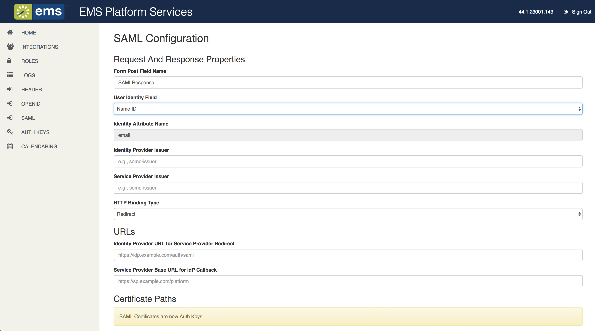

This section guides you authenticating your users with a SAML provider. Authentication with SAML requires configuration prior to beginning the authentication flow.
This topic will give you information on the following:
EMS Platform Services is required for SAML authentication.
The minimum version of EMS Web App and EMS Platform Services for authentication through SAML 2.0 is Update 23.
For EMS Web App, Administrators must enable SAML 2.0 authentication by changing the following parameter value to Yes in EMS Desktop Client:
If set to No, EMS Web App will utilize SAML as configured through Portal Authentication methods.
The minimum version of EMS Platform Services for SAML authentication in the EMS Mobile App is Update 9. There are breaking changes in Update 23 and customers will be required to update SAML configuration settings.
Only Redirect HTTP Binding Type is currently supported.
Update the Encryption key in default.Json file.
The Encryption Key is used for encrypting and decrypting the Service Provider private key when stored in the database via the AuthKey API.
New Customers: The encryption key is already provided in the default.json file.
Existing Customers: The encryption key needs to be generated and added to the default.json file before using the AuthKey API. Run the following command in a terminal, openssl rand -Base64 32, to generate a 256-bit key that is Base64 encoded. The encryption key must be 256-bit and must be Base64 encoded. Restart EMS Platform Services after updating default.Json file.
SAML settings are global and will apply to all integrations utilizing SAML authentication.
You are responsible for the configuration of your chosen IdP, with information relevant to the EMS Platform Services acting as a Service Provider for SAML Authentication. The following EMS Platform Services related settings might be needed in order to configure your IdP.
The following fields are required to complete SAML authentication configuration:

|
Field |
Description |
|---|---|
|
Request and Response Properties |
|
|
Form Post Field Name |
(Optional, default is SamlResponse). Attribute in which assertions are sent, within encoded <samlp:Response> document. |
|
User Identity Field |
REQUIRED. Drop-down list with choice of assertion element containing user identity (Name ID or Attribute). If set to Attribute, then you must set the Identity Attribute Name to the expected assertion attribute name to use for user identity. |
|
Identity Attribute Name |
Assertion attribute name containing user identity. Attribute names can be identity provider-specific (i.e., 'uid', 'mail'). This field is ignored when User Identity Field is set to Name ID. |
|
Identity Provider Issuer |
REQUIRED. Used to verify expected issuer of assertions, included in SAMLResponse as <Issuer xmlns="urn:oasis:names:tc:SAML:2.0:assertion" >http://adfs.mycompany.net/adfs/services/trust</Issuer>. |
|
Service Provider Issuer |
REQUIRED. Included by EMS Platform Services in AuthnRequest requests sent to Identify Provider. This is included in the SAMLRequest as <saml:Issuer>https://mycompany.com/EmsPlatform</saml:Issuer> EMS Platform Services will autogenerate the values for the Service Provider Issuer and the Service Provider Base URL for IdP Callback. |
|
HTTP Binding Type
|
Specifies which SAML binding (HTTP Post or HTTP Redirect) EMS Platform Services will use to transmit SAML protocol messages. Currently only Redirect is supported. |
|
URLs |
|
|
Identity Provider URL for Service Provider Redirect |
REQUIRED. This URL, (e.g., https://idp.example.org/SAML2/SSO/Redirect), includes the authentication request details provided by EMS Platform Services and contains opaque data that it includes in the request. This enables the Identify Provider to include it as Relay State on the SAMLResponse. If you have the identity provider metadata.xml file, you can upload it through the EMS Platform Services endpoint https://company.platform/api/v1/authentication/saml/metadata/idp. The identity provider certificate will be uploaded for you and Identity Provider Issuer. The Identity Provider URL for Service Provider Redirect fields will be populated for you. |
|
Service Provider Base URL for IdP Callback |
REQUIRED. Set this URL to the base URL of the EMS Platform Services installation (i.e., https://mycompany.com/EmsPlatform). EMS Platform Services will autogenerate the values for the Service Provider Issuer and the Service Provider Base URL for IdP Callback. |
|
Certificate Paths |
|
|
SAML Certificates are now Auth Keys. These fields are not editable. |
|
|
Path to Identity Provider Public Certificate |
REQUIRED. Uploaded through Auth Keys. |
|
Path to Service Provider Public Certificate |
Optional. Uploaded through Auth Keys. |
|
Path to Service Provider Private Certificate |
Optional. Uploaded through Auth Keys. |
No Two-Factor Authentication (2fa) support is provided with SAML authentication. 2fa is the responsibility of the Identity Provider (3rd-Party or Customer owned) and not the EMS Platform Services. Token expiration is configured and managed the same for SAML as for other authorization types, thus overriding any SAML Assertion Conditions that specify the assertion expiration timestamp.
See Also: Persistent Authentication for token expiration configuration details. Refer to Customize Your Mobile App Configuration Using config.json for details on building a configuration file for
Once you have created your configuration file, you can proceed with one of the sections below, depending on whether you intend to host the file or pre-configure the application and redistribute it.
Host your configuration file from an applicable web server. Distribute the URL to your end users.
It is not recommended to make this configuration file publicly available, since it will likely have URLs and/or other information in it that you do not want made available. Instead, host the file in a way such that it is only available internally to your organization. Users should only have to perform this import one time per installation of the application.
If you want to pre-configure